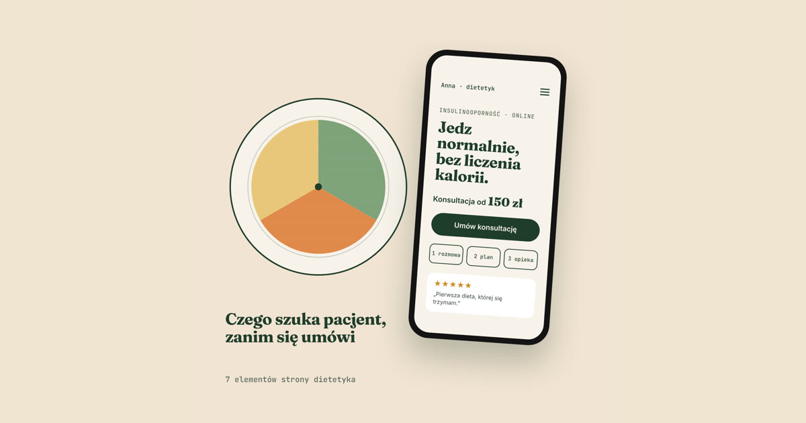

Osoba, która szuka dietetyka, zwykle ma konkretny problem: wyniki badań, które ją niepokoją, kilka nieudanych diet za sobą albo cel sportowy. Zanim napisze, chce wiedzieć trzy rzeczy: czy się na tym znasz, ile to kosztuje i jak wygląda pierwsza wizyta. Jeśli strona nie odpowiada na te pytania w kilka sekund, pacjent wraca do wyników wyszukiwania i klika następną osobę.
Poniżej lista elementów, które sprawdzam przy każdej stronie dla dietetyka. Nie chodzi o ładny wygląd, tylko o to, żeby odwiedzający zamienił się w umówioną konsultację.
Dlaczego sam Instagram i profil w serwisie z rezerwacjami to za mało
Instagram buduje zaufanie, ale nie odpowiada na pytania. Cennik ginie w wyróżnionych relacjach, a informacja o tym, czy pracujesz online, jest gdzieś w opisie sprzed roku. Profil w serwisie rezerwacyjnym rozwiązuje zapisy, ale stawia Cię w jednym rzędzie z konkurencją, często z jej reklamą tuż obok.
Strona to jedyne miejsce, gdzie to Ty decydujesz, co pacjent zobaczy najpierw. Do tego to ją Google pokazuje, kiedy ktoś wpisze „dietetyk” z nazwą miasta albo problemem, z którym się zmaga.
7 elementów, które powinna mieć strona dietetyka
1. Jasne zdanie: komu pomagasz i w czym
Pierwszy ekran ma powiedzieć, dla kogo jest Twoja praca. „Dietetyk kliniczny” to za mało. Dużo lepiej działa konkret: „Pomagam kobietom z insulinoopornością jeść normalnie, bez liczenia każdej kalorii” albo „Dieta dla biegaczy przygotowujących się do maratonu”. Pacjent od razu wie, czy jest we właściwym miejscu.
2. Ceny, chociaż orientacyjne
Brak cen to najczęstszy powód, dla którego ktoś nie pisze. Nie musisz podawać pełnego cennika. Wystarczy „konsultacja od 150 zł” albo „plan żywienia od 300 zł”. Osoba, która widzi kwotę, sama ocenia, czy to dla niej, i przychodzi już zdecydowana.
3. Kim jesteś i jakie masz kwalifikacje
W dietetyce zaufanie opiera się na wiedzy. Pokaż wykształcenie, ukończone kursy i specjalizacje: konkretne nazwy, a nie ogólnik „liczne szkolenia”. Dodaj prawdziwe zdjęcie siebie, najlepiej przy pracy. Pacjent chce wiedzieć, z kim będzie rozmawiać.
4. Jak wygląda współpraca krok po kroku
Pierwsza wizyta u dietetyka to dla wielu osób niewiadoma. Czy trzeba przynieść wyniki? Czy będzie ważenie? Ile trwa konsultacja i kiedy dostanę jadłospis? Trzy lub cztery krótkie kroki rozwiewają te obawy lepiej niż długi opis.
5. Opinie pacjentów
Najlepiej z wizytówki Google, bo są wiarygodne i każdy może je sprawdzić. Wybierz te, które mówią o konkretach: „po trzech miesiącach poprawiły mi się wyniki”, „pierwsza dieta, której się trzymam”. Jedna konkretna opinia jest warta więcej niż dziesięć „polecam”.
6. Prosty zapis na konsultację
Przycisk „Umów konsultację” powinien być widoczny bez przewijania, a na telefonie najlepiej przyklejony do dołu ekranu. Formularz ma mieć tylko to, co naprawdę potrzebne do pierwszego kontaktu: imię, kontakt, krótko w czym możesz pomóc.
Uwaga na dane o zdrowiu. To dane szczególnej kategorii w rozumieniu RODO, więc formularz na stronie nie powinien wymagać opisu chorób ani wyników badań. Takie informacje lepiej zebrać już w trakcie współpracy, w bezpieczny sposób i z odpowiednią zgodą.
7. Online czy stacjonarnie i gdzie Cię znaleźć
Napisz wprost, czy prowadzisz konsultacje online, w gabinecie, czy jedno i drugie. Jeśli przyjmujesz na miejscu, dodaj adres, mapę i informację o dojeździe. Połącz stronę z wizytówką Google, żeby pacjent z okolicy trafił do Ciebie jednym kliknięciem.
Czego unikać na stronie dietetyka
- Obietnic typu „minus 10 kg w miesiąc”. Odstraszają rozsądnych pacjentów i podważają Twoją wiarygodność jako specjalisty.
- Cennika w PDF. Na telefonie nikt go nie otworzy. Ceny powinny być zwykłym tekstem na stronie.
- Zdjęć z banków zdjęć zamiast siebie. Talerz z sałatką nie zbuduje zaufania. Twoja twarz tak.
- Ukrytego kontaktu. Telefon i e-mail powinny być dostępne z każdej podstrony, a nie tylko w stopce.
Ile kosztuje strona dla dietetyka
Prosta strona z ofertą, cennikiem, opiniami i zapisami to koszt od 990 zł netto. Rozbudowana wersja z podstronami dla poszczególnych usług, sekcją pytań i odpowiedzi oraz lokalnym SEO zaczyna się od 1890 zł netto. Szczegóły znajdziesz w cenniku, a przykładowe kierunki wyglądu na stronie Wybierz styl swojej strony. Co dokładnie dostajesz w pakiecie, opisałem na stronie Strona internetowa dla dietetyka.
Najczęstsze pytania
Czy dietetyk potrzebuje strony, jeśli ma profil w serwisie z rezerwacjami?
Tak, jeśli chce, żeby pacjenci trafiali do niego z Google i wybierali go świadomie. Serwis rezerwacyjny dobrze obsługuje zapisy, ale strona buduje zaufanie i pozwala wyróżnić się specjalizacją.
Czy na stronie dietetyka muszą być ceny?
Nie ma takiego obowiązku, ale ceny „od” znacząco zwiększają liczbę zapytań. Pacjent, który zna orientacyjny koszt, pisze z gotową decyzją, a nie tylko z pytaniem o cenę.
Ile trwa zrobienie strony dla dietetyka?
Prosta strona jest gotowa w około 7 dni od otrzymania materiałów. Rozbudowana wersja zajmuje około 14 dni.
Podsumowanie
Dobra strona dietetyka odpowiada na pytania pacjenta, zanim ten zdąży je zadać: komu pomagasz, ile to kosztuje, kim jesteś i jak się umówić. Jeśli chcesz zobaczyć, jak mogłaby wyglądać Twoja, umów bezpłatną konsultację. Przygotuję propozycję pod Twoją specjalizację.